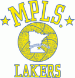
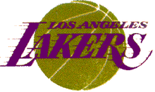
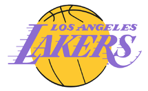
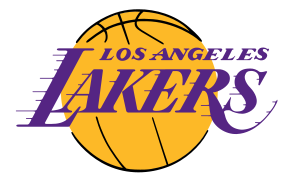

#LakeShow


O Los Angeles Lakers é uma equipe de basquete profissional sediada em Los Angeles, Califórnia. A equipe foi fundada em 1947 e é um dos times mais bem-sucedidos da história da NBA, com 17 títulos de campeonato.
Eles jogam na Conferência Oeste da NBA, na Divisão Pacífico. Alguns dos jogadores mais famosos da equipe incluem Kobe Bryant, Magic Johnson, Kareem Abdul-Jabbar e Shaquille O'Neal.
O Lakers joga em casa no Staples Center, uma arena de última geração em Los Angeles, que também é a casa do time de hóquei no gelo Los Angeles Kings. O Staples Center é um dos principais locais de esportes e entretenimento da cidade, com capacidade para mais de 18.000 espectadores.
A franquia aposentou vários números de camisa, incluindo o 8 e o 24 de Kobe Bryant, o 13 de Wilt Chamberlain e o 32 de Magic Johnson. Com uma história rica em conquistas, o Lakers é uma das equipes mais populares e reconhecidas da NBA em todo o mundo.